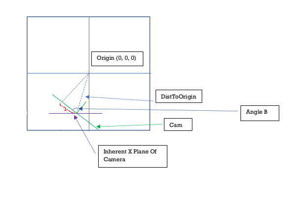

An array holding 3 decimal numbers. These are the coordinates of the center of the camera within the 3D space (X, Y and Z coordinates).
An array holding 2 decimal numbers. This is the rotation orientation of the camera. The first number tracks how much the camera has rotated horizontally(on the XZ plane) and the second number tracks how much it has rotated vertically (on the ZY plane). The angles are measured in radians. A CamRO reading of [0, 0] means that the camera is directly facing straight ahead.
A rightwards turn increments CamRO[0] and a leftwards turn decrements it. An upwards turns increments CamRO[1] and a downwards turn decrements it.
The Camera Screen Displacement Vector. This is a two dimensional vector that exists within the realm of the camera screen. It's important to think of the camera sceen as being a virtual graph of its own that exists within the 3D environment. That way when things in the 3D environment move, you can track where their positions will be on the graph and how camera movements will affect these projections.
For instance: If the camera is facing an object, and then the camera turns rightwards. There will be a rotation transformation applied to all the points in the 3D space in the inverse direction (leftwards). However the more prominent change here would be that from the camera's point of view, the objects will appear to shift to the left of the screen. This is a displacement. When all the points/vectors in the 3D environment are rendered from the camera's point of view, you will have to take into account this displacement. How much the points have displaced and in what direction. This will affect the starting position and ending position of all vectors.
The CamScreenDV has a X value (which is affected by horizontal camera rotations) and a Y value (which is affected by vertical camera rotations)
The width of the camera. Represent by an integer. The unit values are universal in my program. 1 Unit value is 1 square on the grid in all views. A width of 4 means that the camera's width is 4 squares long on the X axis and the center of the camera screen would be after the first 2 squares
The height of the camera. Represented by an integer. A height of 4 means that the camera is 4 squares long on the Y axis and the center is is after first 2 squares.
These are the camera's local unit vectors. CamI^, CamJ^ and CamK^. These unit vectors change as the camera moves and rotates. Which is what drives the transformation of all vectors from the camera's point of view as they get oriented with the camera's local unit vectors.
This is the plane that exists in 3D space if the cam had a CamRO of 0 in its current position. Important to note that this plane is dynamic. It moves with the camera and is not fixed in one point. It's just its angle that never changes.
This is an angle that gets created between the camera's center and the origin point of the world (0, 0, 0). The angle exists on the XZ plane. To consider the angle, we have to consider the camera (in its current position) to have a CamRO of 0. Then on the top view (XZ plane) draw a line from the camera's center to the origin (0, 0, 0). The angle that this line makes with the camera screen (which is now parallel with the X axis since the CamRO is 0) is what this variable is. This comes in handy when calculating various values like the CamScreenDV.
The I^, K^ and K^ unit vectors of the world space. These are constant in the world and do not change with camera transformations.
Points within the 3D space are oriented to these unit vectors and are projected onto the CamHats.
A three dimensional array. Going deep into the array from the outset:
Level 2: Each sub array is a triangle.
Level 1: Each triangle is an array of 3 points.
Level 0: Each point is an array of 3 decimal numbers that represnt its X, Y and Z coordinate.
Ultimately these are the points which are visualized in the 3D space. The points are organized into triangles since that is the simplest shape that can be drawn on a flat plane. A collection of triangles can be organized to form a 3D shape.
Purpose: To update the camScreenDV (Cam Screen Displacement Vector). It calculates this using the current camRO (Camera Rotation Orientation) and the camCoords (The camera’s X, Y and Z coordinates).
It's ultimate goal is to find the length of the line segment below highlighted with a red squiggly line.
There exists a point on the camera where the normals vector from the origin [0,0,0] hits the camera screen. This vector is always perpendicular to the camera screen (hence its called the normals) The red squiggly line represents the distance between the center of the camera screen and the point where this normals vector lands.
In diagram 1.1 below, we can get the length of the red squiggly line (the CamScreenDV) by finding Angle B and DistToOrigin (Distance from the camera to the origin[0,0,0]).
Cos(Angle B) = CamScreenDV / DistToOrigin.
Therefore CamScreenDV = Cos(Angle B) * DistToOrigin
Finding DistToOrigin is easy but finding Angle B is slightly more complicated
